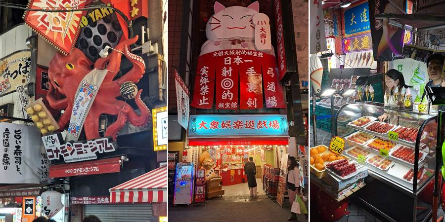
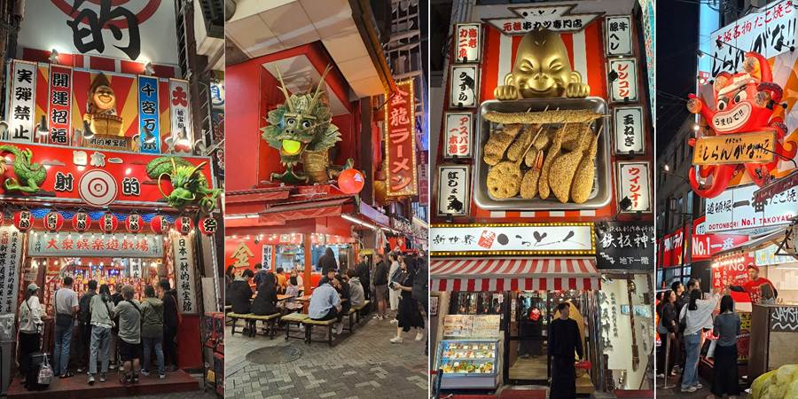
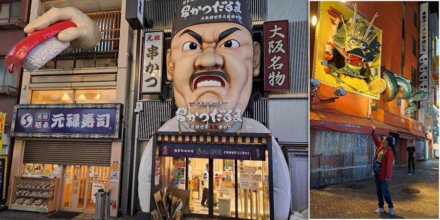
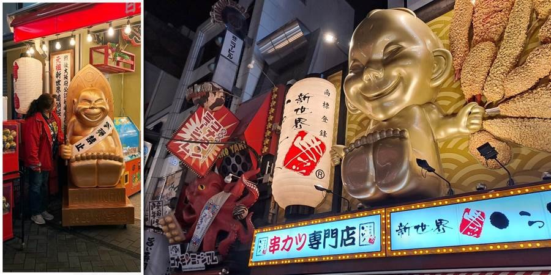

Dan jedanaesti: Noć i besni kuvar
Odmah smo krenuli u noćnu šetnju gradom, da obiđemo dečije prodavnice i prošetamo glavnom džadom peške. Kristina je uzela kuvani kukuruz na ulici, dečaci jagode. Petar je poželeo i gjozu, pa sam ja uzela jednu od njega, da probam i japansku.
Po zgradama su figure: prevelike krabe, hobotnice, mačke, zlatne bebe, besnog kuvara, zmaja... Ko još želi da uđe u restoran kog reklamira besni kuvar?




Deca su izvlačila robotskom rukom figurice. Glindžava ruka i otvori se. Još kad su bili mali smo govorili da je to mamipara. U Tokiu je Luka uspeo da izvuče figuricu i sebi i Kristini. Petar pokušavao ali nije išlo.
Blizu našeg smeštaja ima lokal za maženje mačaka uz piće. Mačke se mogu i udomiti — obične domaće mace. Otkud im, ne znam, jer na ulici bukvalno nismo videli ni jednu. Eto Lidiji ideje za biznis.
Došli smo u sobu posle celog dana na nogama, a Petar dobio neku ludu energiju. Kad se raskakao po sobi! Pazi da se ne udariš. Ne vredi — leti na sve strane po sobi.
Petar voli grickalice. Kupio je smoki — kad ono smoki sladak. Vole tanke bobi štapiće prelivene jagodom.
Ne propustite sledeću avanturu!
Kad Sandra krene u novi kraj sveta, vaš inbox prvi sazna. Prijavite se i stižu vam sve nove priče mejlom.